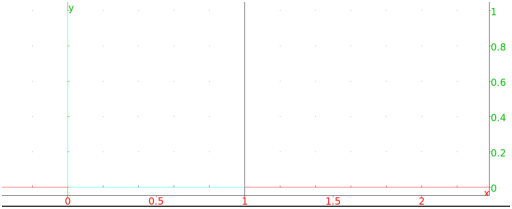
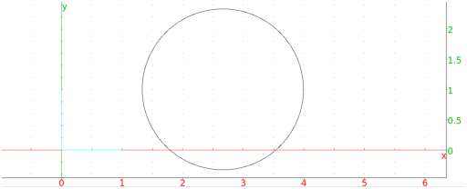
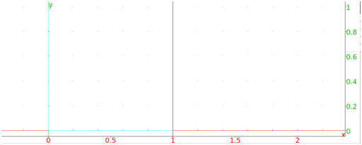
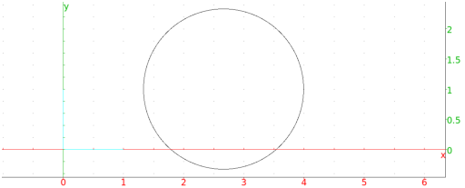

13.15.7 Inversion in the plane: inversion
See Section 14.14.7 for inversions in space.
Given a circle C with center P and radius r, the
inversion of a point A with respect to C is the point A′
on the ray PA satisfying
PA·PA′ = r2.
The inversion command creates an inversion.
-
inversion takes two mandatory arguments and
one optional argument:
-
P, a point (the center of the inversion).
- r, a real number (the radius).
- Optionally, G, a geometric object.
- inversion(P,r) returns a new command which
performs the inversion.
- inversion(P,r,G) returns and draws the
inversion of G.
Examples
-
Input:
| inver:= inversion(i, 2) |
| inver(circle(1+i,1))
|
Output:

then:
inver(circle(1+i,1/2))
Output:

- Input:
inversion(i, 2, circle(1+i,1))
Output:

Input:
inversion(i, 2, circle(1+i,1/2))
Output:
